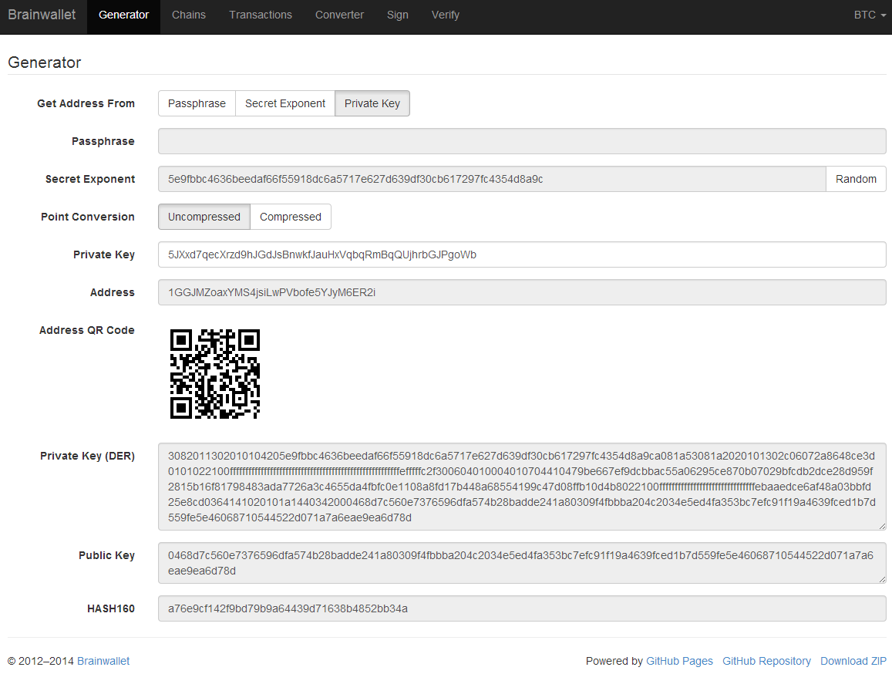

List of tools included with the installation and how to use them
Used to create (and/or send) a Mastercoin transaction
Takes json input via STDIN for the following variables:
The json takes the following format:
{
"transaction_from": "{{Public from Address}}",
"transaction_from_pubkey": "{{Sender Public Key if address has not sent to blockchain yet}}",
"transaction_to": "{{Public to Address}}",
"currency_id": {{1 for MSC, 2 for TMSC}},
"msc_send_amt": {{amount to send}},
"from_private_key": "{{private key for signing}}",
"broadcast": {{1 to create and broadcast or 0 to just create}},
"clean": {{0 -keep all tx files, 1 -remove intersigned tx, 2 -remove all unsigned, 3 -remove all}}
}
Ex:
Note: for security the following was a brand new empty wallet. You should replace it’s details with your own applicable info:
{
"transaction_from": "1GGJMZoaxYMS4jsiLwPVbofe5YJyM6ER2i",
"transaction_from_pubkey": "0468d7c560e7376596dfa574b28badde241a80309f4fbbba204c2034e5ed4fa353bc7efc91f19a4639fced1b7d559fe5e46068710544522d071a7a6eae9ea6d78d",
"transaction_to": "19hf8QEkD3GR7NhUrujWXRg6e4gsHUTysp",
"currency_id": 1,
"msc_send_amt": 5.1,
"from_private_key": "5JXxd7qecXrzd9hJGdJsBnwkfJauHxVqbqRmBqQUjhrbGJPgoWb",
"broadcast": 1
"clean": 1
}
For reference, here is what the brainwallet.org generator page for the above address looks like. Take note of the ‘Uncompressed/Compressed’ option
Will return a json formated output Errors will be returned with json that contains
{
"status": "Status message",
"error": "error details",
"fix": "Corrective action to resolve the issue"
}
Successful run will return json that contains:
{
"status": "Broadcast/Created status",
"valid_check": "Validity check of signed file",
"hash": "Hash of the tx",
"st_file": "location/name of the signed tx file"
}
Standalone running/testing can be done by creating a json file (see input details or example_send.json for structure) You can execute/run the program with:
cat your_file.json | python msc_sxsend.py
Used to get the Mastercoin balance of an address
This script leverages the existing mastercoin tools parsed/validated output. Mastercoin tools should be installed and fully updated with the Mastercoin Data in:
/var/lib/mastercoin-tools/mastercoin_verify/addresses/
Takes json input via STDIN for the following variables:
The json takes the following format:
{
"address": "{{Address to check}}",
"currency_id": {{1 for MSC, 2 for TMSC}},
}
Ex:
{
"address": "1CMauYumpA7YG8i4cPod8FadRLK95HxSob",
"currency_id": 1,
}
Will return a json formated output
Successful run will return json that contains:
{
"address": "Address checked",
"currency_id": "Currency checked",
"balance": "Balance or error message",
}
Standalone running/testing can be done by creating a json file (see input details or example_balance.json for structure) You can execute/run the program with:
cat your_file.json | python msc_balance.py